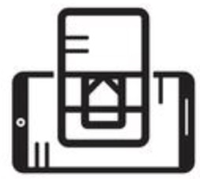

Short Biography
Fan Li is currently a professor in the School of Computer Science and Technology in Beijing Institute of Technology. She received her BEng in Information Technology and her MEng degrees in Communications and Information System from Huazhong University of Science and Technology in 1998 and 2001, respectively, the MEng degree in Electrical Engineering from the University of Delaware, USA in 2004. In the year 2008, she received the PhD degree from the University of North Carolina at Charlotte, USA.
Dr. Li has published more than 200 refereed papers in international leading journals and key conferences in the areas of wireless communications and networking, mobile computing, and security & privacyis, such as ACM MOBICOM, IEEE INFOCOM, ACM UbiComp, and IEEE Transactions on Mobile Computing, IEEE Transactions on Dependable and Secure Computing, IEEE Transactions on Services Computing. She is the inventor of more than 40 granted and 20 pending patents.
Her current research interests include smart sensing, cyber security and privacy, Internet of Things (IoT), smart healthcare and mobile computing.
Research Focus
-

Smart Sensing: smart sensing - Cyber security and Privacy: Cyber security and Privacy
- Internet of Things (IoT): Internet of Things (IoT)
- Smart Healthcare: smart healthcare
Selected Publications
[Selected Conference Papers]
- [INFOCOM] Xiaochen Liu, Fan Li, Yetong Cao, Shengchun Zhai, Song Yang and Yu Wang, “PPGSpotter: Personalized Free Weight Training Monitoring Using Wearable PPG Sensor”, IEEE INFOCOM 2024 (CCF A)
- [INFOCOM] Zhiyuan Zhao, Fan Li, Yadong Xie, Huanran Xie, Kerui Zhang, Li Zhang and Yu Wang, “HearBP: Hear Your Blood Pressure via In-ear Acoustic Sensing Based on Heart Sounds”, IEEE INFOCOM 2024 (CCF A)
- [INFOCOM] Yetong Cao, Shujie Zhang, Fan Li, Zhe Chen and Jun Luo, “hBP-Fi: Contactless Blood Pressure Monitoring via Deep-Analyzed Hemodynamics”, IEEE INFOCOM 2024 (CCF A)
- [INFOCOM] Haoran Yu, Fan Li, “Personalized Prediction of Bounded-Rational Bargaining Behavior in Network Resource Sharing”, IEEE INFOCOM 2024 (CCF A)
- [INFOCOM] Yetong Cao, Fan Li, Huijie Chen, Xiaochen Liu, Chunhui Duan, Song Yang and Yu Wang, “I Can Hear You Without a Microphone: Live Speech Recognition via Earphone Motion Sensors”, IEEE INFOCOM 2023 (CCF A)
- [INFOCOM] Yetong Cao, Chao Cai, Fan Li, Zhe Chen and Jun Luo, "HeartPrint: Passive Heart Sounds Authentication Exploiting In-Ear Microphones", IEEE INFOCOM 2023 (CCF A)
- [INFOCOM] Zhiyuan Zhao, Fan Li, Yadong Xie and Yu Wang, "WakeUp: Fine-Grained Fatigue Detection Based on Multi-Information Fusion on Smart Speakers", IEEE INFOCOM 2023 (CCF A)
- [INFOCOM] Yue Wu, Jingao Xu, Danyang Li, Yadong Xie, Hao Cao, Fan Li and Zheng Yang, "FlyTracker: Motion Tracking and Obstacle Detection for Drones Using Event Cameras", IEEE INFOCOM 2023 (CCF A)
- [INFOCOM] Yadong Xie, Fan Li, Yue Wu, Huijie Chen, Zhiyuan Zhao and Yu Wang, "TeethPass: Dental Occlusion-based User Authentication via In-ear Acoustic Sensing", IEEE INFOCOM 2022 (CCF A)
- [MobiCom] Yetong Cao, Huijie Chen, Fan Li and Yu Wang, "Crisp-BP: Continuous Wrist PPG-based Blood Pressure Measurement", ACM MobiCom 2021 (CCF A)
- [IWQoS] Nan He, Song Yang, Fan Li, Stojan Trajanovski, Fernando A. Kuipers and Xiaoming Fu, "A-DDPG: Attention Mechanism-based Deep Reinforcement Learning for NFV", IEEE IWQoS 2021 (CCF B)
- [INFOCOM] Yetong Cao, Huijie Chen, Fan Li and Yu Wang, "CanalScan: Tongue-Jaw Movement Recognition via Ear Canal Deformation Sensing," IEEE INFOCOM 2021 (CCF A)
- [INFOCOM] Yadong Xie, Fan Li, Yue Wu and Yu Wang, "HearFit: Fitness Monitoring on Smart Speakers via Active Acoustic Sensing," IEEE INFOCOM 2021 (CCF A)
- [INFOCOM] Yetong Cao, Huijie Chen, Fan Li, Song Yang and Yu Wang, "AWash: Handwashing Assistance for the Elderly with Dementia via Wearables," IEEE INFOCOM 2021 (CCF A)
- [ICDCS] Qian Zhang, Yetong Cao, Huijie Chen, Fan Li, Song Yang, Yu Wang, Zheng Yang and Yunhao Liu, "airFinger: Micro Finger Gesture Recognition via NIR Light Sensing for Smart Devices", IEEE ICDCS 2020 (CCF B)
- [INFOCOM] Yetong Cao, Qian Zhang, Fan Li, Song Yang and Yu Wang, “PPGPass: Nonintrusive and Secure Mobile Two-Factor Authentication via Wearables, IEEE INFOCOM 2020 (CCF A)
- [INFOCOM] Yadong Xie, Fan Li, Yue Wu, Sang Yang, and Yu Wang, “D3-Guard: Acoustic-based Drowsy Driving Detection Using Smartphones”, IEEE INFOCOM 2019 (CCF A)
- [INFOCOM] Huijie Chen, Fan Li, and Yu Wang, “EchoTrack: Acoustic Device-free Hand Tracking on Smart Phones”, IEEE INFOCOM 2017 (CCF A)
- [MobiHoc] Cheng Wang, Shaojie Tang, Lei Yang, Yi Guo, Fan Li and Changjun Jiang, “Modeling Data Dissemination in Online Social Networks: A Geographical Perspective on Bounding Network Traffic Load”, ACM/IEEE MobiHoc 2014 (Best Paper Award)
- [IPCCC] Fan Li, Hong Jiang, Yu Wang, Xin Li, Mingzhong Wang and Tabouche Abdeldjalil, “SEBAR: Social Energy BAsed Routing Scheme for Mobile Social Delay Tolerant Networks”, IEEE IPCCC 2013 (Best Paper Award)
- [MASS] Fan Li, Siyuan Chen, Shaojie Tang, Xiao He and Yu Wang, “Efficient Topology Design in Time-Evolving and Energy-Harvesting Wireless Sensor Networks”, IEEE MASS 2013 (Best Paper Award)
- [INFOCOM] Yu Wang, Dingbang Xu, Xiao He, Chao Zhang, Fan Li, and Bin Xu, “L2P2: Location-aware Location Privacy Protection for Location-based Services”, IEEE INFOCOM 2012 (CCF A)
- [INFOCOM] Fan Li, Yu Wang, “Circular Sailing Routing for Wireless Networks”, IEEE INFOCOM 2008 (CCF A)
[Selected Journal Papers]
- [TMC] Xiaochen Liu, Fan Li, Yetong Cao and Yu Wang, “BrailleReader: Braille Character Recognition Using Wearable Motion Sensor”, IEEE Transactions on Mobile Computing, vol. 23, no. 11, pp. 10538-10553, 2024 (CCF A)
- [TMC] Youqi Li, Fan Li, Song Yang, Chuan Zhang, Liehuang Zhu and Yu Wang, “A Cooperative Analysis to Incentivize Communication-Efficient Federated Learning”, IEEE Transactions on Mobile Computing, vol. 23, no. 10, pp. 10175-10190, 2024 (CCF A)
- [TON] Xiaofei Yue, Song Yang, Liehuang Zhu, Stojan Trajanovski, Fan Li and Xiaoming Fu, “Exploiting Wide-Area Resource Elasticity with Fine-Grained Orchestration for Serverless Analytics”, IEEE/ACM Transactions on Networking, 2024 (CCF A)
- [TPDS] Biao Hou, Song Yang, Fan Li, Liehuang Zhu, Lei Jiao, Xu Chen and Xiaoming Fu, “Gamora: Learning-based Buffer-aware Preloading for Adaptive Short Video Streaming”, IEEE Transactions on Parallel and Distributed Systems, vol. 35, no. 11, pp. 2132-2146, 2024 (CCF A)
- [TSC] Liehuang Zhu, Sadaf Bukhari, Kashif Sharif, Chang Xu, Fan Li and Sujit Biswas, “Dynamic Fine-grained SLA Management for 6G eMBB-plus Slice using mDNN & Smart Contracts”, IEEE Transactions on Services Computing, 2024 (CCF A)
- [TSC] Biao Hou, Song Yang, Fan Li, Liehuang Zhu, Xu Chen, Yu Wang and Xiaoming Fu, “NOVA: Neural-Optimized Viewport Adaptive 360-Degree Video Streaming at the Edge”, IEEE Transactions on Services Computing, 2024 (CCF A)
- [TDSC] Yetong Cao, Chao Cai, Fan Li, Zhe Chen and Jun Luo, “Enabling Passive User Authentication via Heart Sounds on In-Ear Microphones”, IEEE Transactions on Dependable and Secure Computing, 2024 (CCF A)
- [TMC] Qiuyang Zeng, Fan Li, Zhiyuan Zhao, Youqi Li and Yu Wang, “AcouWrite: Acoustic-Based Handwriting Recognition on Smartphones”, IEEE Transactions on Mobile Computing, vol. 23, no. 8, pp. 8557-8568, 2024 (CCF A)
- [TSC] Nan He, Song Yang, Fan Li, Liehuang Zhu, Lifeng Sun, Xu Chen and Xiaoming Fu, “Incentive Mechanism for Resource Trading in Video Analytic Services Using Reinforcement Learning”, IEEE Transactions on Services Computing, 2024 (CCF A)
- [TMC] Ke Xiao, Song Yang, Fan Li, Liehuang Zhu, Xu Chen and Xiaoming Fu, “Making Serverless Not So Cold in Edge Clouds: A Cost-Effective Online Approach”, IEEE Transactions on Mobile Computing, vol. 23, no. 9, pp. 8789-8802, 2024 (CCF A)
- [TDSC] Yadong Xie, Fan Li, Yue Wu and Yu Wang, “User Authentication on Earable Devices via Bone-Conducted Occlusion Sounds”, IEEE Transactions on Dependable and Secure Computing, vol. 21, no. 4, pp. 3704-3718, 2024 (CCF A)
- [TMC] Yetong Cao, Fan Li, Huijie Chen, Xiaochen Liu, Shengchun Zhai, Song Yang and Yu Wang, “Live Speech Recognition via Earphone Motion Sensors”, IEEE Transactions on Mobile Computing, vol. 23, no. 6, pp. 7284-7300, 2024 (CCF A)
- [TMC] Yadong Xie, Fan Li and Yu Wang, “FingerSlid: Towards Finger-sliding Continuous Authentication on Smart Devices via Vibration”, IEEE Transactions on Mobile Computing, vol. 23, no. 5, pp. 6045-6059, 2024 (CCF A)
- [TMC] Zhiyuan Zhao, Fan Li, Yadong Xie, Yue Wu and Yu Wang, “BSMonitor: Noise-Resistant Bowel Sound Monitoring Via Earphones”, IEEE Transactions on Mobile Computing, vol. 23, no. 4, pp. 3213-3227, 2024 (CCF A)
- [TMC] Yetong Cao, Fan Li, Huijie Chen, Xiaochen Liu and Yu Wang, “Tongue-Jaw Movement Recognition Through Acoustic Sensing on Smartphones”, IEEE Transactions on Mobile Computing, vol. 23, no. 1, pp. 879-894, 2024 (CCF A)
- [IMWUT] Yetong Cao, Chao Cai, Anbo Yu, Fan Li, and Jun Luo, “EarAcE: Empowering Versatile Acoustic Sensing via Earable Active Noise Cancellation Platform”, ACM on Interactive, Mobile, Wearable and Ubiquitous Technologies, vol. 7, iss. 2, no. 47, pp. 1-23, 2023 (CCF A)
- [TMC] Yetong Cao, Fan Li, Qian Zhang, Song Yang and Yu Wang, “Towards Nonintrusive and Secure Mobile Two-Factor Authentication on Wearables”, IEEE Transactions on Mobile Computing, vol. 22, no. 5, pp. 3046-3061, 2023 (CCF A)
- [TMC] Yadong Xie, Fan Li, Yue Wu and Yu Wang, “HearFit+: Personalized Fitness Monitoring via Audio Signals on Smart Speakers”, IEEE Transactions on Mobile Computing, vol. 22, no. 5, pp. 2756-2770, 2023 (CCF A)
- [TOSN] Qian Zhang, Zheng Yang, Fan Li, Biaokai Zhu and Pengpeng Chen, “WVC: Towards Secure Device Paring for Mobile Augmented Reality”, ACM Transactions on Sensor Networks, vol. 20, iss. 1, no. 4, pp. 1-22, 2023 (CCF B)
- [TPDS] Nan He, Song Yang, Fan Li, Stojan Trajanovski, Liehuang Zhu, Yu Wang and Xiaoming Fu, “Leveraging Deep Reinforcement Learning with Attention Mechanism for Virtual Network Function Placement and Routing”, IEEE Transactions on Parallel and Distributed Systems, vol. 34, no. 4, pp. 1186-1201, 2023 (CCF A)
- [TOSN] Yetong Cao, Fan Li, Xiaochen Liu, Song Yang and Yu Wang, “Towards Reliable Driver Drowsiness Detection Leveraging Wearables”, ACM Transactions on Sensor Networks, vol. 19, iss. 2, no. 39, pp. 1-23, 2023 (CCF B)
- [TVT] Liehuang Zhu, Md Monjurul Karim, Kashif Sharif, Chang Xu and Fan Li, “Traffic Flow Optimization for UAVs in Multi-layer Information-Centric Software-Defined FANET”, IEEE Transactions on Vehicular Technology, vol. 72, iss. 2, pp. 2453-2467, 2023
- [TOSN] Yue Wu, Fan Li, Yadong Xie, Yu Wang and Zheng Yang, “SymListener: Detecting Respiratory Symptoms via Acoustic Sensing in Driving Environments”, ACM Transactions on Sensor Networks, vol. 19, iss. 1, no. 3, pp. 1-21, 2023 (CCF B)
- [TMC] Yanan Gao, Song Yang, Fan Li, Stojan Trajanovski, Pan Zhou, Pan Hui and Xiaoming Fu, “Video Content Placement at the Network Edge: Centralized and Distributed Algorithms”, IEEE Transactions on Mobile Computing, vol. 22, no. 11, pp. 6843-6859, 2023 (CCF A)
- [TMC] Yetong Cao, Fan Li, Huijie Chen, Xiaochen Liu, Song Yang and Yu Wang, “Leveraging Wearables for Assisting the Elderly with Dementia in Handwashing”, IEEE Transactions on Mobile Computing, vol. 22, no. 11, pp. 6554-6570, 2023 (CCF A)
- [TMC] Youqi Li, Fan Li, Lixing Chen, Liehuang Zhu, Pan Zhou and Yu Wang, “Power of Redundancy: Surplus Client Scheduling for Federated Learning against User Uncertainties”, IEEE Transactions on Mobile Computing, vol. 22, no. 9, pp. 5449-5462, 2023 (CCF A)
- [TMC] Song Yang, Fan Li, Zhi Zhou, Xu Chen, Yu Wang and Xiaoming Fu, “Online Control of Service Function Chainings Across Geo-Distributed Datacenters”, IEEE Transactions on Mobile Computing, vol. 22, no. 6, pp. 3558-3571, 2023 (CCF A)
- [IMWUT] Yetong Cao, Fan Li, Huijie Chen, Xiaochen Liu, Li Zhang and Yu Wang, “Guard Your Heart Silently: Continuous Electrocardiogram Monitoring with Wrist-worn Motion Sensor”, ACM on Interactive, Mobile, Wearable and Ubiquitous Technologies, vol. 6, iss. 3, no. 103, pp. 1-29, 2022 (CCF A)
- [TMC] Yue Wu, Fan Li, Yadong Xie, Song Yang and Yu Wang, “HDSpeed: Hybrid Detection of Vehicle Speed via Acoustic Sensing on Smartphones”, IEEE Transactions on Mobile Computing, vol. 21, iss. 8, pp. 2833-2846, 2022 (CCF A)
- [TMC] Yadong Xie, Fan Li, Yue Wu, Song Yang and Yu Wang, “HearSmoking: Smoking Detection in Driving Environment via Acoustic Sensing on Smartphones”, IEEE Transactions on Mobile Computing, vol. 21, iss. 8, pp. 2847-2860, 2022 (CCF A)
- [Network] Yanan Gao, Song Yang, Fan Li, and Xiaoming Fu, “Adaptive and Efficient Qubit Allocation Using Reinforcement Learning in Quantum Networks”, IEEE Networks, vol. 36, no. 5, pp. 48-54, 2022
- [TSC] Song Yang, Fan Li, Ramin Yahyapour and Xiaoming Fu, “Delay-Sensitive and Availability-Aware Virtual Network Function Scheduling for NFV”, IEEE Transactions on Services Computing, vol. 15, no.1, pp. 188-201, 2022 (CCF A)
- [TSC] Youqi Li, Fan Li, Song Yang, Yue Wu, Huijie Chen, Kashif Sharif and Yu Wang, “MP-Coopetition: Competitive and Cooperative Mechanism for Multiple Platforms in Mobile Crowd Sensing”, IEEE Transactions on Services Computing, vol. 14, no. 6, pp. 1864-1876, 2021 (CCF A)
- [Network] Nan He, Song Yang, Fan Li and Xu Chen, “Intimacy-based Resource Allocation for Network Slicing in 5G via Deep Reinforcement Learning”, IEEE Network, vol. 35, no. 6, pp. 111-118, 2021
- [TNSE] Youqi Li, Fan Li, Song Yang, Pan Zhou, Liehuang Zhu and Yu Wang, "Three-Stage Stackelberg Long-Term Incentive Mechanism and Monetization for Mobile Crowdsensing: An Online Learning Approach", IEEE Transactions on Network Science and Engineering, vol. 8, iss. 2, pp. 1385-1398, 2021
- [TPDS] Song Yang, Fan Li, Stojan Trajanovski, Ramin Yahyapour and Xiaoming Fu, “Recent Advances of Resource Allocation in Network Function Virtualization”, IEEE Transactions on Parallel and Distributed Systems, vol. 32, iss. 2, pp. 295-314, 2021 (CCF A)
- [CSUR] Liehuang Zhu, Md Monjurul Karim, Kashif Sharif, Chang Xu, Fan Li, Xiaojiang Du and Mohsen Guizani, “SDN Controllers: A Comprehensive Analysis and Performance Evaluation Study”, ACM Computing Surveys, vol. 53, iss. 6, no. 133, pp. 1-40, 2021
- [TMC] Yadong Xie, Fan Li, Yue Wu, Song Yang and Yu Wang, “Real-Time Detection for Drowsy Driving via Acoustic Sensing on Smartphones”, IEEE Transactions on Mobile Computing, vol. 20, iss. 8, pp. 2671-2685, 2021 (CCF A)
- [TMC] Song Yang, Fan Li Stojan Trajanovski, Xu Chen, Yu Wang and Xiaoming Fu, “Delay-Aware Virtual Network Function Placement and Routing in Edge Clouds”, IEEE Transactions on Mobile Computing, vol. 20, iss. 2, pp. 445-459, 2021 (CCF A)
- [IMWUT] Huijie Chen, Fan Li, Wan Du, Song Yang, Matthew Conn and Yu Wang, “Listen to Your Fingers: User Authentication based on Geometry Biometrics of Touch Gesture”, ACM on Interactive, Mobile, Wearable and Ubiquitous Technologies, vol. 4, iss. 3, no. 75, pp. 1-75, 2020 (CCF A)
- [CSUR] Iqal Alam, Kashif Sharif, Fan Li, Zohaib Latif, Md. Monjurul Karim, Sujit Biswas, Boubakr Nour and Yu Wang, “A Survey of Network Virtualization Techniques for Internet of Things using SDN and NFV”, ACM Computing Surveys, vol. 53, iss. 2, no. 35, pp. 1-35, 2020
- [Network] Boubakr Nour, Kashif Sharif, Fan Li, Song Yang, Hassine Moungla and Yu Wang, “ICN Publisher-Subscriber Models: Challenges and Group-based Communication”, IEEE Network, vol. 33, no. 6, pp. 156-163, 2019
- [TOSN] Qian Zhang, Fan Li, Song Yang and Yu Wang, “W3W: Energy Management of Hybrid Energy Supplied Sensors for Internet of Things”, ACM Transactions on Sensor Networks, vol. 15, iss. 1, no. 10, pp. 1-10, 2019 (CCF B)
- [IMWUT] Huijie Chen, Fan Li, Xiaojun Hei and Yu Wang, “CrowdX: Enhancing Automatic Construction of Indoor Floorplan with Opportunistic Encounters”, ACM on Interactive, Mobile, Wearable and Ubiquitous Technologies, vol. 2, iss. 4, no. 159, pp. 1-159, 2018 (CCF A)
- [TVT] Fan Li, Hong Jiang, Hanshang Li, Yu Cheng and Yu Wang, “SEBAR: Social-Energy-Based Routing for Mobile Social Delay Tolerant Networks”, IEEE Transactions on Vehicular Technology, vol. 66, iss. 8, pp. 7195-7206, 2017
- [TC] Fan Li, Zhiyuan Yin, Shaojie Tang, Yu Cheng and Yu Wang, “Optimization Problems in Throwbox-Assisted Delay Tolerant Networks: Which Throwboxes to Activate? How Many Active Ones I Need?”, IEEE Transactions on Computers, vol. 65, iss. 5, pp. 1663-1670, 2016 (CCF A)
- [TPDS] Ke Xu, Meng Shen, Hongying Liu, Jiangchuan Liu, Fan Li and Tong Li, “Achieving Optimal Traffic Engineering Using a Generalized Routing Framework”, IEEE Transactions on Parallel and Distributed Systems, vol. 27, iss. 1, pp. 51-65, 2016 (CCF A)
- [TMC] Fan Li, Siyuan Chen, Minsu Huang, Zhiyuan Yin, Chao Zhang and Yu Wang, “Reliable Topology Design in Time-Evolving Delay-Tolerant Networks with Unreliable Links”, IEEE Transactions on Mobile Computing, vol. 14, iss. 6, pp. 1301-1314, 2015 (CCF A)
- [Sci Technol] Fan Li, Xiao He, Siyuan Chen, Libo Jiang, and Yu Wang, “Traffic Load Distribution of Circular Sailing Routing in Dense Multihop Wireless Networks”, Tsinghua Science and Technology, vol. 18, no. 3, pp. 220-229, 2013 (Best Paper Award)
- [VTM] Fan Li and Yu Wang, “Routing in Vehicular Ad Hoc Networks: A Survey”, IEEE Vehicular Technology Magazine, vol. 2, iss. 2, pp. 12-22, 2007 (Best Paper Award)
[Research monographs]
- Youqi Li, Fan Li, Song Yang and Chuan Zhang, “Incentive Mechanism for Mobile Crowdsensing: A Game-theoretic Approach”, Springer, ISBN: 978-981-99-6920-3, January 2024.
- Song Yang, Nan He, Fan Li and Xiaoming Fu, “Resource Allocation in Network Function Virtualization: Problems, Models and Algorithms”, Springer, ISBN: ISBN 978-981-19-4814-5, September 2022.
Service
Conference Organization
- IEEE International Performance Computing and Communications Conference (IEEE IPCCC) 2019, Co-General Vice-Chairs
- IEEE International Performance Computing and Communications Conference (IEEE IPCCC) 2018, TPC Program Co-Chairs
- IEEE International Performance Computing and Communications Conference (IEEE IPCCC) 2017, Publication Chair
- IEEE International Performance Computing and Communications Conference (IEEE IPCCC) 2016, 2023, Publicity Co-Chairs
- IEEE International Conference on Mobile Ad-Hoc and Smart Systems (IEEE MASS) 2023, Track Chair
- IEEE International Conference on Mobile Ad-Hoc and Smart Systems (IEEE MASS) 2023, Track Chair
- ACM MM 2024, Area Chair
- BIGCOM 2024, Track Chair
Technical Program Committee Member
- IEEE International Conference on Computer Communications (IEEE INFOCOM), 2020, 2022, 2023, 2024, 2025
- IEEE International Conference on Communications, 2015-2025
- IEEE Global Communications Conference (GLOBECOM), 2016-2024
- ACM/IWQoS 2024
- COCOON 2024
- IEEE MASS 2023
- IEEE IPCCC 2019, 2020, 2021, 2022, 2023
Service Awards
- Outstanding Service Award of ACM Turing Conference in China, 2019.
- Outstanding Service Award of ACM Turing Conference in China, 2021.
Song Yang also served as a reviewer of many international journals, such as IEEE/ACM Transactions On Networking (TON), IEEE Transactions on Mobile Computing (IEEE TMC), IEEE Transactions on Computers, IEEE Transactions on Wireless Communication, IEEE Transactions on Parallel and Distributed Systems (IEEE TPDS), IEEE Transactions on Networks and Service Management, etc. He serves as a member of ACM and a senior member of IEEE and CCF.
Teaching
- Undergraduate Courses
- Computer Networks
- Networking and Communications
- Postgraduate Courses
- Wireless Networks and Mobile Computing (English)
Research Funds
- National Key Research and Development Program of China, Secure Distributed Crowdsourcing Technology for Industrial Production Control Software (Sub-topic Leader), 2023.12-2026.11, On-going
- BJNSF General Program, Research on Optimal Allocation and Scheduling of Video Stream Analysis Resources under edge computing, 2023.1-2025.12, On-going
- NSFC General Program, Research on Optimal Deployment and Scheduling of Video Resources for edge computing, 2022.1-2025.12, On-going
- NSFC Youth Foundation, Research on resource optimization and scheduling under network function virtualization environment, 2019.1-2021.12, Completed
- Intelligent private cloud platform based on software definition, 2020.7-2021.6, Completed
- Academic Initiation Plan for Young Teachers of Beijing Institute of Technology, 2018.1-2020.12, Completed
Note
I am looking for highly self-motivated Postdoc, Ph.D. students and postgraduates who are interested in computer network, artificial intelligence, optimization algorithms, and edge computing. It's better to teach a man fishing than to give him fish. I like to share and exchange scientific research methods and ideas with students to help students better learn scientific research skills.